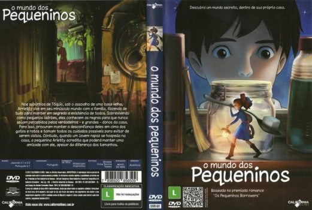

Outro Título:借りぐらしのアリエッティ
País:Japan, 95 minutos
Idiomas falados:Japonês, Português
Gênero(s):Fantasia, Animação, Família
Diretor(s):Hiromasa Yonebayashi
Escritor(es):Hayao Miyazaki, Keiko Niwa, Mary Norton
Codec:MPEG-2 (DVD)
Número: 5857


Certificado:L
Sinopse:
Nos subúrbios de Tóquio, sob o assoalho de uma casa velha, Arrietty vive em seu minúsculo mundo com a família, fazendo de tudo para manter em segredo a existência de todos. Sobrevivendo como pequenos ladrões, eles conhecem as regras para que nunca sejam percebidos pelos verdadeiros – e grandes – donos da casa. Para isso, procuram manter a desconfiança deles em cima dos gatos e ratos e tomam todos os cuidados possíveis para evitar de serem vistos. Contudo, quando um jovem rapaz se hospeda na casa, a pequenina Arrietty acredita que poderá manter uma amizade com ele, apesar da diferença de tamanhos.
Elenco:
Tipo de mídia: DVD5,
Legendas: Português, Sem Legendas
Alugado: Não
Tela: Anamorphic Widescreen